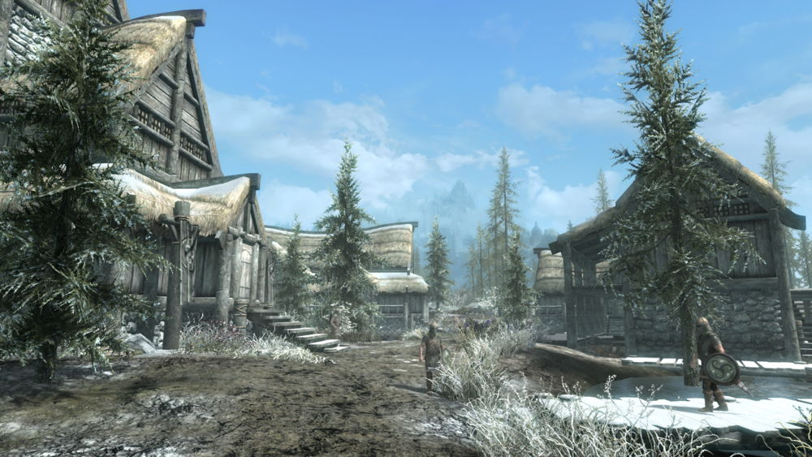
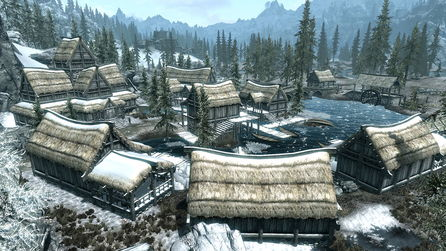
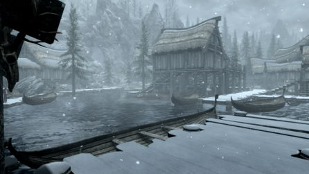
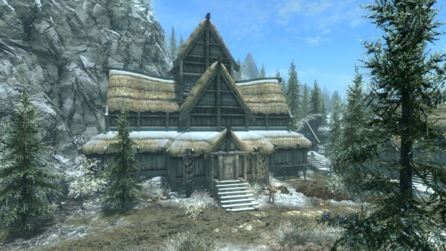

"Владение делится поровну на открытую всем ветрам тундру с разбросанными по ней фермами и большой зловонный солончак. Здесь мало интересного, разве что столица владения — Морфал. Пока что ярл Идгрод Чёрная содействовала Империи, но если создастся сложная ситуация, то она будет исходить лишь из собственных интересов"— Владения Скайрима

Морфал расположен в болотах Хьялмарка, поэтому находится в некоторой изоляции от других поселений, но несмотря на это, в городе находится имперский легат. Ярл Морфала Идгрод Чёрная — союзница Империи. Хотя этот населённый пункт относится к городам и является столицей владения, внешне он производит впечатление обычной деревушки — тут всего несколько зданий и нет даже элементарных оборонительных сооружений. Люди здесь часто говорят об увиденных ими странных огнях и тенях, бродящих ночью по болоту, и очень беспокоятся о лесопилке, которая является единственным источником благосостояния Морфала. Полезных объектов в городе немного. Единственный магазин — лавка алхимика. Кроме того, обитающий тут мастер колдовства Фалион приторговывает магическими товарами (так что без способности «Купец» навыка «Красноречие» возможности торговли в городе сильно ограничены) и за плату поделится с главным героем своей мудростью. Уставший от странствий Довакин может также отдохнуть в местной таверне или поработать на лесопилке.
Администрация |
Зал Высокой Луны — дом ярла Хьялмарка |
| Ярл Идгрод Чёрная |
| Асльфур, супруг ярла и управляющий |
| Горм, хускарл ярла |
|  |  |  |
| Морфал | Доки | Зал Высокой Луны |